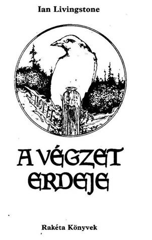
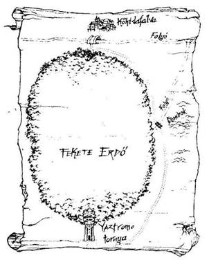
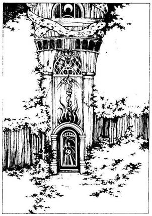

A mű eredeti címe:
The Forest of Doom
Malcolm Barter illusztrációival
Fordította:
Varsányi Mária
© lan Livingstone, 1983
Illustration copyright © Malcolm Barter, 1983
Hungarian translation Varsányi Mária, 1991
A végzet erdeje
Háttértörténet
Igazi kardforgató kalandor vagy, aki bebarangoltad országod északi vidékeit. Mindig is megvetetted a kisvárosi élet unalmát, és most is, vállalva a veszélyt, kincsek után indulsz. Mit sem törődve a hosszú úttal és a megpróbáltatásokkal, melyeknek minduntalan ki vagy téve, egy dolog érdekel csupán - az ismeretlen sors; amely rád vár. Bátor harcos vagy, és nem rettensz vissza semmitől. Mestere vagy annak, hogy miként végezz a gonosz emberekkel és vadállatokkal. Tíz napja már, hogy itt vándorolsz az északi határvidéken, de még teremtett lelket nem láttál. Ez egyáltalán nem zavar, hisz tökéletesen kielégít a saját társaságod, és élvezettel vadászgatsz, eszegetsz és alszol, miközben a napfényes napok egyre múlnak. Este van, épp egy nyárson sült nyulat lakmároztál be, és most, magadra húzva báránybőr takaródat, aludni térsz. Telihold van, melynek fényei ott ragyognak földbe szúrt kardod pengéjén. Azon tűnődsz, vajon mikor kell ismét elővenned a fegyveredet, hogy kioltsd vele valamilyen vadállat életét. Különös vidék ez, melyet rejtélyes, undorító vadállatok - goblinok, trollok, mi több, sárkányok laknak. Miközben tábortüzed lassan kialszik, csöndben álomba merülsz, s lelki szemeid előtt ordítozó zöld arcú trollok jelennek meg. Hirtelen, tőled jobbra, a bokrok között megreccsen egy ág, mintha egy hatalmas láb taposott volna rá. Felpattansz, és megragadod a
kardodat. Mozdulatlanul figyelsz, hogy lecsaphass láthatatlan ellenfeledre. Ekkor hatalmas nyögést hallasz, amit egy test tompa puffanásának hangja követ. Csak nem egy csapda van ott? Óvatosan odamész a bokorhoz, ahonnan a hangokat hallottad, és lassan szétnyitod az ágakat. Amikor lenézel, egy apró termetű bozontos szakállú öregembert pillantasz meg, aki a fájdalomtól eltorzult arccal áll előtted. Leguggolsz hozzá, és leveszed kopaszodó fejéről a vassisakot. Ekkor látod, hogy egy nyílvessző áll ki dagadt, páncéling borította melléből. Felemeled, odaviszed a tábortűzhöz, és feléleszted a tüzet. Betakargatod az öreget a báránybőrrel, és sikerül egy kis vizet itatnod vele. Köhögve, nyögve, mereven felül, szemét kimereszti, és hangosan kiabálni kezd:
- Elkapom őket! Elkapom őket! Ne félj, Gillibran, jön majd Nagyláb és elviszi neked a pörölyt. Igen, igen, majd én... Ó, igen...
A törpe, akit ezek szerint Nagylábnak hívnak, szemmel láthatólag önkívületi állapotban van a mérgezett végű nyíltól, mely a mellét érte. Nézed, amint visszahanyatlik a földre, majd a fülébe súgod a nevét. Rezzenéstelen szemmel bámul bele a világba, és ismét kiabálni kezd.
- Leskelődő! Vigyázz! Leskelődő! Jajjajj! A pöröly! Vidd el a pörölyt Gillibrannak! Mentsd meg a Törpéket!
Szeme félig csukva, úgy látod, mintha a fájdalma kissé enyhült volna, és mintha kissé magához is tért volna, amikor halk, suttogó hangon így szól:
- Ments meg minket, barátom… vidd el a pörölyt Gillibrannak... csak ez a pöröly képes arra, hogy egyesítse a törpéket a trollok ellen... A Fekete

Erdőben kutattunk a pöröly után... a kis emberek elrejtették... a többieket megölték... a térkép itt van a tarsolyomban, s az majd elvezet e vidék leghíresebb varázslójának, Yaztromónak a házába... sokféle varázsszer kapható nála, amivel megvédheted magad a Fekete Erdő lényeivel szemben... itt az aranyam, vedd el... menj, keresd meg a pörölyt és vidd el Gillibrannak, Kőhidafalva urának... meglásd, hálás lesz érte...
Nagyláb szemmel láthatóan még mondani akarna valamit, de csak egy utolsó halálsóhaj hagyja el az ajkát. Leülsz és elgondolkodol azon, amit a törpe mondott. Ki az a Gillibran? Ki az a Yaztromo? És mi ez az egész felhajtás a törpék pörölye körül? Lecsatolod a halott Nagyláb övétől a kicsiny tarsolyt, melyben 30 Aranytallért találsz, meg egy térképet (lásd túloldalt). Miközben az aranyakat csörgeted a markodban, arra gondolsz, vajon miféle jutalmat kapsz majd azért, ha visszaszerzed a törpék híres pörölyét és eljuttatod Kőhidafalvára. Elhatározod, hogy megkeresed a pörölyt a Fekete Erdőben. Több hete már annak, hogy egy jót verekedtél, most pedig még jókora fizetséget is remélhetsz érte.
Miután mindezt végiggondoltad, lehúzod szegény Nagylábról a báránybőr takarót, és aludni térsz. Reggel eltemeted az öreg törpét, és felszedelőzködsz. Megnézed a térképet, felpillantasz a napra, és meghatározod az irányt, amerre menned kell. Nyugodtan fütyörészve, vidáman indulsz el délnek abban a reményben, hogy megtalálod Yaztromót és megtudod, mit tud felajánlani neked.
